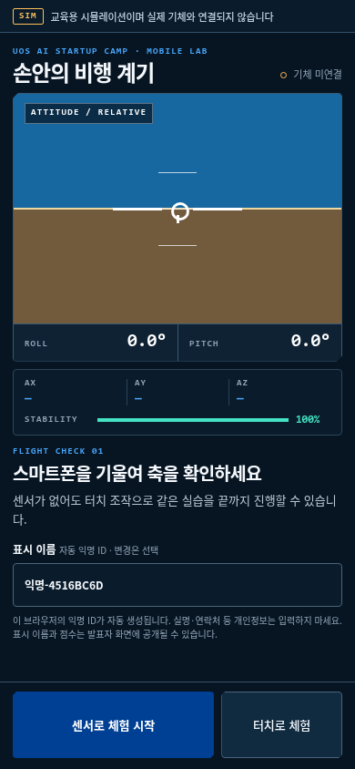

01
의의
드론이 뜨는 원리부터, 왜 비행 제어 컴퓨터를 직접 만들었는지까지
02
하드웨어
기체 프레임, 자체 제작 보드, 전원 계통과 안전 규칙
03
제어 소프트웨어
센서 → 검증 체계 → 게인 튜닝 → 안전장치 → 자동 착륙
04
시연 · 체험
진행자 호버링 시연, 모바일 균형잡기 체험, 텔레메트리 해설
프로펠러는 위로 미는 힘만 만든다. 방향을 바꾸는 부품은 없다.
- 네 개를 모두 세게 돌리면 위로 올라간다
- 한쪽 두 개를 더 세게 돌리면 그쪽이 들려 기울어지고, 기울어진 방향으로 미끄러져 간다
- 대각선 두 개를 더 세게 돌리면 회전 반작용이 남아 제자리에서 돈다
즉 드론 조종은 네 모터의 출력 배분 문제로 환원된다. 사람이 직접 배분하는 것은 불가능에 가깝고, 그래서 컴퓨터가 대신한다.

작은 토크 차이와 외란으로 기울기가 생기면, 자세 제어가 없을 때 그 각속도를 스스로 줄일 장치가 없다.
자전거
작은 기울기를 사람이 계속 되돌려야 서 있을 수 있다.
드론
자세 제어가 없으면 작은 기울기가 빠르게 커질 수 있다.
모터 추력 차이·외란이 생긴다
↓
각속도가 생겨 자세가 변한다
↓
제어가 없으면 자세 오차가 누적된다
비행 제어 컴퓨터(FC)는 기울기를 읽고 네 모터 출력을 1초에 1000번 다시 배분한다.

사진 속 작은 컴퓨터가 네 단계를 계속 반복한다.
센서 읽기
기울기와 회전 속도 측정
오차 계산
현재 자세와 목표 자세 비교
모터 배분
오차를 줄이도록 네 출력 조정
다시 측정
움직인 기체를 읽고 처음부터 반복
센서에서 모터까지 1ms마다 반복
제어 과정 확인
기성 FC는 설정과 운용이 빠르지만, 부호·축 오류 주입과 제어 경로 계측에는 별도의 펌웨어 수정·검증 환경이 필요하다.
고장 주입 가능
펌웨어를 직접 작성해 오류를 재현하고, 안전장치와 테스트가 실제로 반응하는지 확인할 수 있다.
듀얼 IMU 구성
IMU 두 개를 달아 서로 비교하는 구성과 그에 맞는 진단 로직을 직접 구현했다.


기체 — 3D 프린팅 프레임
트러스 구조 암과 샌드위치 바디 플레이트를 직접 설계·출력
보드 — 자체 설계 FC
ESP32-S3, IMU 2개, 지자기센서, 전원 계통을 한 장에

코드 — 제어 펌웨어와 검증 도구
자세 추정, 캐스케이드 PID, 안전장치, 시뮬레이터, 지상국
순서가 중요하다. 센서 추정을 먼저 신뢰할 수 있게 만들고, 그것을 검증할 체계를 세운 다음, 그 체계가 낸 숫자로 게인을 정했다.
01
자세 추정 정확도
두 IMU의 축과 부호를 맞추고, 바이어스를 보정
02
검증 체계 구축
컴퓨터 안에서 기체를 날리는 시뮬레이터(SIL)
03
게인 튜닝
시뮬레이터가 낸 숫자를 근거로 Ki를 10배 상향
04
통신·동시성 하드닝
멈춤·오탐·경쟁 상태를 막는 안전장치
05
자동 착륙
신호가 끊겼을 때 추락 대신 내려앉기

설계·수정 기록
고장 주입

측정·비교
현재 사업화 방향은 실제 개발 기록과 SIL 환경을 교사와 학생이 반복할 수 있는 실습으로 구성하는 것이다.
오늘 발표와 체험은
교육 모듈의 시제품이다.
교육 모듈의 시제품이다.
개념
IMU로 기울기를 추정하고 필터의 의미 확인
검증
부호 오류를 주입하고 SIL의 검출 결과 비교
체험
스마트폰 균형잡기와 실제 텔레메트리 해석
개념 → 실패 → 측정 → 수정의 기술 과정을 참가자 눈높이로 재구성

불안정성
드론은 원래 넘어진다. 넘어지지 않는 것은 1초에 1000번 계산한 결과이다.
측정
게인과 보정값은 SIL·벤치 로그를 근거로 정했다.
재현
고장을 주입했을 때 테스트가 실제로 실패하는지 확인했다.
배터리
4S 3000mAh
→
전원부
12V → 5V / 3.3V
→
비행 제어기
ESP32-S3-N16R8
→
ESC ×4
PWM 30A
→
모터 ×4
BLDC 1750KV
자세 센서 · IMU ×2
ICM-42670-P · SPI · 1kHz로 읽어 기울기와 회전 속도 추정
방위 센서 · 지자기
BMM350 · I2C · 50Hz로 읽어 좌우 회전(Yaw)의 기준점 제공
지상국 · 노트북
WiFi UDP · 조종 명령을 올리고 65개 상태 필드와 1kHz 원시 IMU를 분리 기록
힘은 왼쪽에서 오른쪽으로, 정보는 아래에서 위로 흐른다. 모터·ESC·배터리와 센서는 상용 부품을 사용했고, 프레임·FC 보드·펌웨어·지상국은 직접 설계·구현했다.
| 구분 | 모델 / 스펙 | 역할 |
|---|---|---|
| MCU | ESP32-S3-N16R8 | 제어 연산 · 통신 · 두 개 코어 분담 |
| 자세 센서 | ICM-42670-P ×2 | 가속도·각속도 측정, 두 개로 상호 감시 |
| 방위 센서 | BMM350 | 지자기 헤딩 측정, Yaw 드리프트 보정 |
| ESC | EMAX BLHeli 30A ×4 | PWM 신호를 모터 회전으로 변환 |
| 모터 | BLDC CCRC 1750KV ×4 | 추진력 생성 |
| 프로펠러 | T-MOTOR T4944-3 (4.9×4.4″) | CW 2개 · CCW 2개 대각 배치 |
| 배터리 | ECOFLUX 4S 3000mAh 120C | 전원 공급 (벤치에서는 파워서플라이 사용) |
| 프레임 | 자체 설계 · 3D 프린팅 | 트러스 암 + 샌드위치 바디 플레이트 |
IMU를 두 개 사용해 측정값을 서로 비교하도록 구성했다. 뒤에서 두 센서의 축과 부호를 맞추는 과정을 설명한다.
가벼우면서 휘지 않아야 한다. 둘은 서로 반대 방향의 요구이다.
- 암이 휘면 모터의 추력 방향이 바뀌어, 제어기가 계산한 값과 실제 힘이 어긋난다
- 속을 비우고 리브를 넣는 트러스 구조로 무게를 줄이면서 굽힘 강성을 확보했다
- 암은 교체형이다. 추락 시 암 하나만 다시 출력하면 된다
3D 프린팅을 전제로 설계했기 때문에, 실패한 형상을 하루 안에 다시 뽑아 비교할 수 있었다.


- 상·하판 분리 — 배터리와 배선을 사이 공간에 넣어 무게 중심을 낮췄다
- 육각 패턴 타공 — 하중 경로를 남기면서 면적을 덜어냈다
- 제어 보드는 상판 위, 모터 배선에서 가장 먼 자리에 둔다
보드 위치는 나중에 문제가 된다. 모터에 흐르는 전류가 자기장을 만들어 방위 센서를 오염시키기 때문이다. (세션 3에서 다룬다)

화면에서 괜찮아 보이던 형상이, 손에 쥐면 아닌 경우가 많았다.
- 모터 마운트 나사 간격이 실제 모터와 어긋난 경우
- 층 방향(적층 방향)과 하중 방향이 어긋나 암이 쪼개진 경우
- 배선 통로가 없어 조립 후에 선을 넣을 수 없던 경우
암을 세 번 수정했고, 바꾼 형상은 하루 안에 다시 출력해 비교했다.

- ESP32-S3 한 개에 모터 4채널, IMU 2개(SPI), 지자기센서(I2C)를 모았다
- 12V 입력에서 5V·3.3V를 만들고, 전원 경로에 보호용 MOSFET을 두었다
- 센서와 모터 신호를 확인할 수 있도록 디버깅 연결 지점을 두었다
- 디버깅용 USB와 부트·리셋 스위치를 보드 위에 유지했다
회로도의 핀 이름이 그대로 펌웨어의 상수 이름이 된다. 두 곳이 어긋나면 증상이 부호 오류처럼 나타나서, 원인을 찾는 데 시간이 오래 걸린다.


| 1차에서 겪은 일 | 현재 보드의 대응 |
|---|---|
| 전압을 재려면 부품 다리에 프로브를 대야 했다 | 전원·신호 측정용 패드를 표면에 노출 |
| 모터 배선이 보드를 가로질러 길게 지나갔다 | 모터 커넥터를 한쪽 변에 정렬해 배선 단축 |
| 센서를 교체하면 배선을 다시 만들어야 했다 | IMU 2개 · 지자기센서를 보드에 직접 실장 |
그래서 현재 보드는 전원·신호 측정 패드를 표면에 노출했다. 문제 발생 시 부품 다리에 직접 프로브를 대지 않아도 된다.
현재 실행 상태 · 차기 PCB는 주문 진행 중이다. 납땜 작업과 알리 부품 납기는 일정 위험으로 관리하고 있다.
| 신호 | GPIO | 위치 / 비고 |
|---|---|---|
| SPI SCK / MISO / MOSI | 12 / 13 / 11 | 두 IMU 공용 버스 |
| IMU1 CS / IMU2 CS | 10 / 9 | 칩 선택선으로 두 센서를 구분 |
| Motor M1 | 4 | 전-좌 (FL) · CW |
| Motor M2 | 5 | 후-우 (RR) · CW |
| Motor M3 | 6 | 전-우 (FR) · CCW |
| Motor M4 | 7 | 후-좌 (RL) · CCW |
모터 믹서 — 네 모터에 출력을 나누는 식
M1 = T − P + R − Y
M2 = T + P − R − Y
M3 = T − P − R + Y
M4 = T + P + R + Y
M2 = T + P − R − Y
M3 = T − P − R + Y
M4 = T + P + R + Y
T는 전체 출력, R·P·Y는 좌우기울기·앞뒤기울기·회전 보정량이다. 출력이 허용 범위를 넘으면 세 보정량을 같은 비율로 줄여 토크 비율을 보존한다.
부호가 하나라도 틀리면 기체는 자세를 바로잡는 대신 넘어지는 쪽으로 힘을 준다. 그래서 벤치에서 한 모터씩 돌려 물리적으로 확인한다.
모터 벤치 테스트는 아래 안전 순서로 진행한다.
- 벤치 테스트에서는 프로펠러를 제거한다
- 전원을 넣기 전에 극성·핀 배치·모터 순서·보정 방향을 확인한다
- 배터리 대신 전류 제한을 걸 수 있는 파워서플라이로 시작한다
- 한 번에 한 모터만, 저속 상한(1250µs)을 걸고 돌린다
- 조종 신호는 USB 연결로 보낸다 (무선 패드는 WiFi와 간섭)
센서 읽기
IMU 2개 · 1kHz
→
자세 추정
상보필터로 각도 계산
→
각도 루프
250Hz · 목표 각속도 생성
→
각속도 루프
1kHz · PID 계산
→
믹서 · PWM
네 모터로 출력 배분
기체가 움직이면 센서 값이 바뀌므로, 이 흐름은 끊임없이 순환한다
항상 함께 도는 감시자
태스크 워치독 · RC 신호 워치독 · 과도 기울기 컷 · IMU 상호 감시
두 개의 코어
한 코어는 제어 계산만, 다른 코어는 통신과 기록만 담당
밖으로 나가는 기록
65개 상태 필드는 초당 20번 CSV로, 원시 듀얼 IMU는 별도 1kHz 스트림으로 기록
01
자세 추정
IMU의 간접 측정으로 기울기를 추정하는 방법과, 부호를 틀렸던 세 번의 사고
IMU의 간접 측정으로 기울기를 추정하는 방법과, 부호를 틀렸던 세 번의 사고
02
검증 체계
비행 없이 게인을 측정하는 시뮬레이터를 만들고, 그 시뮬레이터를 다시 검증하기
비행 없이 게인을 측정하는 시뮬레이터를 만들고, 그 시뮬레이터를 다시 검증하기
03
게인 튜닝
PID가 무엇인지, 그리고 왜 Ki를 10배 올렸는지
PID가 무엇인지, 그리고 왜 Ki를 10배 올렸는지
04
방위 보정
좌우 회전만 기준점이 없는 이유와, 모터 전류가 만든 새로운 문제
좌우 회전만 기준점이 없는 이유와, 모터 전류가 만든 새로운 문제
05
안전장치
멈춤·오탐·경쟁 상태를 막는 장치들과, 신호가 끊겼을 때의 자동 착륙
멈춤·오탐·경쟁 상태를 막는 장치들과, 신호가 끊겼을 때의 자동 착륙
06
개발 방법론
네 겹으로 겹쳐 놓은 검증 구조
네 겹으로 겹쳐 놓은 검증 구조
각도는 직접 읽지 않고, 두 센서의 간접 측정으로 추정한다.
가속도계 · 중력 방향
오래 보면 기준이 되지만, 흔들림과 선형 가속이 섞이면 요동한다.
자이로 · 회전 속도 누적
순간 움직임은 빠르게 잡지만, 작은 오차까지 더해져 시간이 지나면 흐른다.
아주 짧은 순간 · 수 ms
자이로는 빠르고 안정적 · 가속도계는 진동과 가속에 흔들림
긴 시간 · 수 초~수 분
가속도계는 중력 기준 유지 · 자이로는 작은 오차가 누적
약점이 반대이므로 두 값을 섞어 서로를 보완한다. 이것이 상보필터이다.
각도 = α × (직전 각도 + 자이로 변화량) + (1−α) × 가속도 각도
α = 0.999 / 0.9995 / 0.9998 · 가속도 크기의 신뢰도에 따라 자동 선택
자이로 — 순간 움직임을 빠르게 따라간다.
가속도계 — 매 계산 주기 0.1% 이하로 중력 기준을 섞는다.
정지에 가까우면 빨리 교정하고, 급기동·진동 중에는 자이로를 더 오래 믿는다.
가속도계는 중력만 걸려 있을 때 정확하다. 지금 그런 상황인지 판단할 방법이 필요하다.
가속도 크기 ≈ 1G
가속도 크기가 1g에 가까운 구간
선형 가속이 크지 않은 구간으로 보고 α를 낮춰 가속도계 비중을 올린다. 정지 여부를 확정하는 판정은 아니다.
1G에서 벗어남
급기동 중 — 자이로에 맡긴다
가속·감속·외부 충격이 섞인 상태이다. α를 0.9998까지 올려 가속도계 비중을 거의 0으로 줄인다.
현재 코드는 가속도 크기에 따라 α를 0.999~0.9998 사이에서 바꾼다.
α ≈ τ / (τ + dt)
dt = 0.001초 (1초에 1000번 계산)
τ = 0.5초 → α ≈ 0.998
τ = 5초 → α ≈ 0.9998
500Hz로 변경 → 같은 τ를 유지하려면 α 감소
계산에서 확인되는 성질
- α는 대부분 0.99 이상이다. 소수점 셋째 자리 이하의 차이가 성격을 바꾼다
- α를 직접 손으로 고칠 때 생기는 의미 변화
- τ를 정하고 코드가 α를 계산하게 만드는 안전한 설정 방식
- 계산 주기가 바뀌면 같은 α가 다른 의미를 갖는다
실제로 이 프로젝트에서도 α를 직접 적지 않고, 원하는 시간상수에서 역산한 값을 상수로 두었다.
관측
기체는 수평인데
OVER-TILT 발생
OVER-TILT 발생
→
원인 확인
IMU2의 X·Z축
부호가 반대
부호가 반대
정렬하지 않고 평균해 값이 서로 상쇄됐다.
→
수정
평균 전에
축 방향 정렬
축 방향 정렬
IMU2에 X=−1, Y=+1, Z=−1을 적용했다.
두 IMU를 평균 내기 전에 축과 부호를 먼저 맞춰야 한다. 그렇지 않으면 평균이 오류를 줄이는 대신 숨길 수 있다.
자이로는 가만히 있어도 완전한 0을 내놓지 않는다.
해결 · 시작 시 영점 보정
전원을 켠 직후 정지 구간의 값을 바이어스로 저장하고, 이후 두 IMU의 모든 측정값에서 뺀다.
운용 규칙 — 전원을 켤 때 기체를 움직이면 잘못된 영점이 비행 내내 남는다.
Roll 각속도 = + 센서 Y
Pitch 각속도 = − 센서 X
Yaw 각속도 = − 센서 Z
가속도 X = + 센서 Y
가속도 Y = − 센서 X
가속도 Z = + 센서 Z
Pitch 각속도 = − 센서 X
Yaw 각속도 = − 센서 Z
가속도 X = + 센서 Y
가속도 Y = − 센서 X
가속도 Z = + 센서 Z
가속도 부호는 맞았지만 자이로만 반대로 들어갔다. 이 경우 제어기는 기울기를 줄이는 대신 키운다.
현재 검증된 여섯 줄 — 하드웨어와 자세 추정 코드가 만나는 경계
세 번 모두 센서축과 기체축의 부호 약속이 어긋난 문제였다.
코드는 정상으로 보인다
식 자체보다 센서축과 기체축의 부호 약속이 어긋난 오류였다. 컴파일은 되고 값도 나왔다.
증상이 원인을 가리키지 않는다
"과도 기울기 경보"라는 증상에서 "IMU2 실장 방향"으로 거슬러 올라가야 한다.
실기로 확인하면 위험하다
부호가 뒤집힌 상태에서는 보정이 반대로 작동해 실기에서 즉시 발산할 수 있다.
게인 튜닝 전에, 부호·축 오류를 비행 없이 검출하는 SIL 하니스를 먼저 만들었다.
게인의 정답을 모르는 상태에서 바로 띄우면, 실패할 때마다 기체가 위험해진다.
너무 약한 게인 — 기울기를 잡지 못함
너무 강한 게인 — 진동 뒤 발산 가능성
SIL에서 먼저 범위를 좁힌다.
실제 제어 코드를 가상 기체에 연결해 부호와 게인을 확인한 뒤, 실기에서 보수적으로 재검증한다.
실제 제어 코드를 가상 기체에 연결해 부호와 게인을 확인한 뒤, 실기에서 보수적으로 재검증한다.
실제 비행
진짜 IMU → 제어 코드 → 진짜 모터
SIL
가짜 IMU → 같은 제어 코드 → 가상 기체
제어 코드는 그대로
실제 비행 펌웨어의 제어 함수를 수정 없이 가져온다. 다시 구현하면 실제 펌웨어와 다른 코드를 검증하게 된다.
물리는 독립 구현
모터 위치와 프로펠러 회전 방향에서 토크를 처음부터 다시 계산한다. 믹서 코드를 베끼지 않는다.
왜 베끼면 안 되는가
같은 실수를 양쪽에 하면 부호가 우연히 맞아떨어져 버그를 놓친다. 두 계산은 서로 독립이어야 한다.
host SIL 하니스는 노트북에서 실행되며, 실제 비행 없이 게인과 자동착륙 값을 수치로 측정한다.
① 모터 출력 → 토크
지레의 원리로, 네 모터의 추력 차이가 만드는 회전력을 계산
② 토크 → 각가속도
뉴턴의 운동 법칙으로, 회전력을 회전 가속도로 변환
③ 적분 → 각속도·각도
누적해서 가상 기체의 진짜 자세를 얻음 (정답)
④ 정답 → 가짜 센서값
그 자세를 IMU가 읽었다면 어떤 숫자가 나올지 역으로 만들어 낸다
⑤ 진짜 제어 코드에 입력 → ①로
제어 코드는 자기가 시뮬레이션 안에 있는지 모른다
이 구조가 주는 것
가상 기체의 상태값을 기준으로 자세 추정 오차를 직접 계산할 수 있다. 현재 실비행 계측에는 외부 자세 기준이 없어 같은 직접 비교를 하지 못했다.
test_sil_attitude.cpp
#include "dual_imu_cascade_pwm.ino"
실기와 같은 pid_task()를 그대로 컴파일
＋
Arduino.h shim
vTaskDelayUntil()
→ pre_tick_hook(tick_index)
→ pre_tick_hook(tick_index)
실제 1kHz 태스크의 대기 지점에서 물리 계산 실행
직전 제어 결과
motorOut[4]
네 모터 PWM
→
독립 물리 모델
integratePlant()
추력 → 토크 → 각속도·자세
→
센서 합성
injectImuFromPlant()
기체 상태 → 듀얼 IMU 원시값
→
실제 제어 태스크
pid_task()
IMU 읽기 → 자세 추정 → PID → 새 motorOut
pid_task()가 다음 vTaskDelayUntil()에 도달
1 tick = 1ms
새 motorOut으로 다음 물리 계산
정상 S1 · PASS
초기 Roll 8° · Pitch −6° → 3,000 tick
마지막 500 tick 평균 0.0513° · 0.1179°
마지막 500 tick 평균 0.0513° · 0.1179°
부호 반전 · FAIL
롤 배분 R → −R 주입
최대 |Roll| 1,291.8°에서 S1 실패
최대 |Roll| 1,291.8°에서 S1 실패
관측 결과 · 각도 발산
부호를 뒤집자, 제어기는 오차를 줄이는 대신 계속 키웠다.
정상 부호
비정상 발산이 사라짐
부호 반전
최대 롤 각도 1,292°까지 발산
주입 조건
SIL_INJECT_SIGN_FAULT로 실제 자이로 부호 오류를 재현했다.
검출 결과
최대 롤 각도 1,292° 발산을 실패로 판정했다.
확인한 범위
이 주입 조건에서 하니스가 부호 반전 오류 유형을 검출한다는 점이다.
고장을 주입했을 때 테스트가 실패해야 해당 오류에 대한 검출력을 확인할 수 있다.
P(비례) 항 — 수평에서 벗어난 정도에 비례해서 모터 출력을 조정한다. 많이 기울면 많이, 조금 기울면 조금.
바람이 한쪽으로 계속 부는 상황
바람이 미는 힘 = Kp × 남은 기울기
이 등식이 성립하는 순간 기체는 더 이상 회전하지 않고 멈춘다.
등식이 성립하려면 "남은 기울기"가 0보다 커야 한다. 즉 기체는 완전한 수평이 아니라, 조금 기울어진 상태로 평형을 이룬다.
일정한 외란이 계속되면 이렇게 정상상태 오차가 남는다. Kp를 키우면 오차는 줄지만 진동 위험이 커진다.
우리 기체의 경우, 바람이 아니라 무게 중심의 치우침이 같은 역할을 했다.
P
지금 얼마나 벗어났는지에 비례해 빠르게 대응한다.
I
오래 남은 오차를 누적해 밀어낸다.
누적값은 ±50µs 안에서 제한한다.
누적값은 ±50µs 안에서 제한한다.
D
변화 속도에 반대로 작용해 진동을 제동한다.
측정
P만 사용했을 때 외란 뒤 오차가 2.5°에서 남았다.
→
판단
Ki=0.005에서는 적분항이 클램프의 1.4%만 사용됐다.
→
조치
Ki를 0.005에서 0.05로 올려 호버 시간 척도에서 작동하게 했다.
왜 SIL 제안값(0.5)을 쓰지 않았나
시뮬레이션은 완전 트림 기준으로 0.5를 제안했지만, 실기 첫 비행에서는 의도적으로 더 낮은 값을 택했다. 시뮬레이션이 담지 못한 요소(프로펠러 불균형, 배선 간섭)가 실기에 있다.
변경 근거
Ki=0.005에서 적분항 사용량이 클램프의 1.4%에 그친 것이 상향 근거였다.
바깥 루프 · 250Hz
각도 오차 → 목표 회전 속도
안쪽 루프 · 1000Hz
각속도 오차 → 모터 출력
회전 속도를 중간 목표로 두면 목표를 지나치는 오버슈트를 따로 제동할 수 있다.
| 항목 | Roll | Pitch | Yaw | 비고 |
|---|---|---|---|---|
| Kp (각도 루프) | 6.0 | 6.0 | 3.0 | 250Hz · 목표 각속도 생성 |
| Kp (각속도 루프) | 0.50 | 0.50 | 1.50 | 1kHz |
| Ki (각속도 루프) | 0.050 | 0.050 | 0.050 | SIL 근거로 10배 상향 · ±50µs 클램프 |
| Kd (각속도 루프) | 0.015 | 0.015 | 0.000 | Yaw는 D 없이 P 중심 |
| 상보필터 α | 0.999~0.9998 | 0.999~0.9998 | K=0.001 | Roll/Pitch 적응형 · Yaw 250Hz |
지상국에서 gains 명령으로 12개 값을 읽어, 펌웨어 선언값과 일치하는지 매 세션 시작 전에 확인한다.
앞뒤·좌우 기울기 (Roll · Pitch)
중력을 장기 기준으로 쓸 수 있다
선형 가속이 크지 않은 구간에서는 가속도계가 장기적인 중력 기준을 제공한다. 누적 오차는 이 기준으로 교정된다.
좌우 회전 (Yaw)
중력으로는 알 수 없다
제자리에서 도는 동작은 중력 방향을 바꾸지 않는다. 기준이 없으니 자이로 누적 오차가 교정되지 않고 계속 쌓인다.
자이로만 사용
18.3°
지자기 융합
2.4°
초기 벤치 시험에서 기준점을 더하자 누적 오차가 8분의 1 이하로 줄었다.
BMM350은 자이로 누적 오차를 되돌리는 장기 방위 기준을 제공한다.
BMM350
50Hz 표본
50Hz 표본
→
자이로 Yaw와 비교해 방위 오차를 구한다.
Yaw 보정
250Hz · K=0.001
250Hz · K=0.001
→
오차를 약 4초에 걸쳐 반영해 현재 향한 방향을 유지한다.
"몇 초에 걸쳐 기준으로 돌아올 것인가"를 먼저 정한다.
새 Yaw = 이전 Yaw + K × 방위 오차
현행 구현은 250Hz에서 K = 0.001, 즉 한 번에 오차의 0.1%만 반영한다.
시간상수 τ — 지자기 기준으로 누적 오차를 대략 63% 줄이는 데 걸리는 시간. 0.004초 간격과 K=0.001이면 약 4초이다.
| 구현 요소 | 현행 값 | 의미 |
|---|---|---|
| 지자기 읽기 | 50Hz | BMM350 새 표본 수신 |
| Yaw 보정 | 250Hz · K=0.001 | 회당 오차 0.1% 반영 |
| 시간상수 | 약 4초 | 노이즈를 천천히 흡수 |
1kHz에서 α=0.99975를 쓰는 계산과 시간상수는 비슷하지만, 실제 코드의 주기와 계수는 250Hz·K=0.001이다.
전류가 흐르는 전선 주변에는 자기장이 생긴다. 나침반 옆에서 큰 전류를 흘린 것과 같다.
스로틀 상승
기체는 돌지 않았는데 헤딩 값이 함께 변했다.
→
원시값 기록
Mag_X/Y/Z를 텔레메트리에 추가했다.
→
기울기 추정
출력 변화에 따른 자기장 오차를 벤치 로그에서 구했다.
→
예상 오염 제거
원시 자기장 값에서 출력에 따른 예상 오차를 뺐다.
후속 재보정에서는 센서 오프셋과 축별 크기 차이를 함께 다루는 타원체 보정으로 교체했고, 별도 캡처와 보드 출력으로 다시 확인했다.
스로틀을 같은 만큼 올렸을 때, 나침반이 얼마나 틀어지는가
3.64° → 0.02°
오차 기울기가 약 180분의 1로 감소
보정 전에는 허용 한계를 크게 넘었지만, 보정 후에는 기준 안쪽으로 들어왔다.
타원체 재보정 뒤 재시험도 −0.067°/100µs로 같은 수준을 확인했다.
모터 출력을 올려도 헤딩 추세가 거의 움직이지 않도록 전류 간섭을 제거했다.
부팅 안전값과 실제 운용 기본값을 분리했다.
- 펌웨어 내부 변수는 재부팅 직후 OFF로 시작한다
- 지상국은 시동 전에 조종자의 기본 선택인 mag 1을 보내며, 현재 검증된 운용값은 ON이다
- 비교 시험이 필요할 때만 --no-mag 또는 mag off로 끈다
첫 실비행 무장 구간에서 Mag_Enabled=1이 100%였고 Yaw와 MagHeading이 함께 움직였다. 그래서 ON을 정상 경로로 유지한다.
제어 태스크 heartbeat
신호가 계속 들어옴
제어 태스크 정상
제어 태스크 정상
500ms
신호가 500ms 끊김
강제 재부팅
강제 재부팅
워치독 초기화 실패
→
시동(arm) 거부
센서 통신이 멈춰 제어 코드가 정지하면 모터가 마지막 출력에 남을 수 있다. 워치독은 그 상태가 지속되는 시간을 제한한다.
조종 신호가 500ms 이상 끊기면 위험하므로, "마지막 수신 이후 흐른 시간"을 매 순간 계산한다.
무슨 일이 있었나
통신 담당 코어가 시간 기록을 갱신하는 바로 그 순간 제어 코어가 뺄셈을 하면, 계산 결과가 음수가 되어야 할 상황에서 아주 큰 양수로 뒤집혔다.
그 결과 신호가 정상 수신되는 중에도 타임아웃으로 판정되어, 모터 출력이 최소값으로 떨어졌다.
해결 · 비교 방식 수정
음수를 표현할 수 있는 방식으로 비교하도록 바꿨다. 한 줄의 수정이지만, 두 코어가 같은 값을 동시에 다룰 때만 나타나는 문제였다.
실기 재검증
40회 재검증에서 오탐은 재현되지 않았다.
조종 명령에는 순번(시퀀스)이 붙는다. 늦게 도착한 패킷이나 중복 패킷을 걸러내기 위한 장치이다. 여기에 두 가지 결함이 있었다.
결함 1
음수 순번이 큰 양수로 뒤집힘
잘못된 패킷이 "아주 최신 패킷"으로 취급되어, 그 뒤의 정상 패킷이 모두 버려질 수 있었다.
결함 2
순번 0이 "순번 없음"과 충돌
값 0을 "아직 아무 패킷도 받지 않음"이라는 뜻으로도 쓰고 있어서, 두 상태를 구분할 수 없었다.
단위 테스트 — 두 결함 모두 기체 없이 노트북 테스트로 찾아냈다. 실기에서는 발생 시점과 조건을 통제하기 어려운 문제이다.
기존 방식
즉시 모터 정지
안전한 것처럼 보이지만, 공중에 있는 기체를 정지시키면 그대로 추락이다.
현재 방식 · RC 타임아웃 전용
시간 기반 하강으로 전환
저장된 수평 트림을 유지하면서 출력을 낮추고, 3초 뒤 백스톱으로 정지한다.
하강 속도의 상한
초기 하강값은 제어 여유분보다 작게 유지한다. 하강 중에도 자세를 잡을 힘이 남아 있어야 한다.
백스톱 시간
현재 착지 감지는 종료 조건이 아니다. landed=false로 두고 3초가 지나면 반드시 정지한다.
이 경로를 쓰지 않는 경우
센서 전멸·과도 기울기·수동 정지 명령은 자동 착륙 없이 즉시 컷한다.
착지를 잘못 판단해 공중에서 모터를 끄는 것보다, 판정을 보류하는 쪽이 안전하다.
Matek 3901-L0X의 거리·광류를 받는 코드 경로는 구현됐다. 실물 장착 뒤에도 먼저 필드 60~64에 기록하며, 검증 전에는 착지 결정이나 제어에 사용하지 않는다.
물리적 한계
가속도만으로는 "정지 상태"와 "일정한 속도로 내려가는 상태"를 구분할 수 없다.
두 경우 모두 가속도계는 1g를 가리킨다. 속도가 변하지 않으면 가속도는 0이고, 남는 것은 중력뿐이기 때문이다.
그래서 IMU 기반 판정은 가설과 관측을 다시 분리해 검토했다.
PMW3901 · 광류
연속된 바닥 영상을 비교해 카메라 시야에서 무늬가 움직이는 각속도 ω를 구하는 방식이다.
VL53L0X · ToF 거리
940nm 적외선이 바닥에 반사되어 돌아오는 시간을 이용해 절대 거리를 재는 방식이다.
익숙한 관계
선속도 v = 반지름 r × 각속도 ω
드론에 대입
바닥 속도 v ≈ 높이 h × 광류 각속도 ω
배치
기체 하부에서 렌즈가 수직으로 바닥을 향하고, 방향 화살표가 기체 전방을 향하는 배치이다. 회전 중심 가까이에 두어 보정해야 할 지렛팔 효과를 줄인다.
배선
5V · GND · TX 세 선을 사용한다. 모듈 TX를 ESP32-S3의 GPIO16에 연결하고, 수신 전용이므로 모듈 RX는 연결하지 않는다.
광학 조건
부팅 시 렌즈와 바닥 사이를 2cm보다 크게 두고, 바닥 무늬와 60lux 이상의 조도를 확보한다. 작동 범위는 약 8cm~2m이다.
펌웨어 배선 정의는 완료된 상태이다. 최종 브래킷·배선 고정과 장착 오프셋 실측은 HW 장착 후 확인 대상이다.
현재 구현
UART 115200bps
TX → GPIO16 수신
→
MSPv2 파서
CRC · 거리 · 광류 해석
→
텔레메트리 필드 60~64
거리·품질·Flow X/Y·품질 기록
제어 연결 전
신뢰도 문턱
품질값·8cm~2m 범위·500ms 신선도 확인
→
좌표와 척도
축·부호·장착 오프셋 확인, h × ω로 수평 속도 환산
→
비행 검증
기록 → 저고도 테더 → 폐루프 순서
VL53L0X 거리의 예상 효과
저고도 고도 제한과 착륙 접근 판단
IMU의 1g만으로 구분하지 못했던 지면 접근을 직접 거리로 관측한다. 충분히 검증되면 3초 타이머만 쓰는 하강을 고도 기반 단계로 보완할 수 있다.
PMW3901 광류의 예상 효과
GPS가 없는 실내의 수평 드리프트 억제
바닥 기준 수평 속도를 추정해 Roll·Pitch 목표에 보정값을 더하는 방식이다. 고도·자세 보정과 바닥 무늬·조도 조건을 함께 만족해야 한다.
현재 경계 — 수신·파싱·기록은 구현됐지만 두 측정값은 아직 모터 출력에 영향을 주지 않는다. 품질이 낮거나 데이터가 오래되면 기존 자세 제어와 시간 기반 안전 경로를 유지한다.
시도 1 · 원리적 한계
1g로 돌아오는 순간을 감지
착지하면 가속도가 1g로 안정될 것이라고 생각했다.
→ 등속 하강 중에도 계속 1g이다. 원리적으로 구분이 불가능했다.
시도 2 · 관측 대역 한계
지면에 부딪히는 순간의 충격을 감지
착지 순간에는 반발력으로 가속도가 튈 것이라고 보았다. 이론은 맞다.
→ 가속도 하드웨어 LPF 25Hz가 짧은 충격 서명을 약화하고, 비행 진동과도 겹친다.
능동 프로브는 다음 가설이었지만, 비교했던 두 분포가 모두 지면 데이터로 확인됐다. 공중 분포는 미측정이므로 착지 판정 성능을 말할 수 없다.
가설 · 출력을 40µs, 120ms 낮춰 공중과 지면 반응을 구분
라벨 정정 · 비교한 두 분포는 모두 지면, 공중 분포는 미측정
실제 관측 · 지면에서도 반응이 남았고 변경한 임계값에서는 10회 모두 미검출
프로브는 기록에만 사용하고 착지 결정에는 사용하지 않는다.
프로브 응답
상태를 텔레메트리에 기록만 남긴다.
→
착지 판정
landed=false를 유지해 조기 모터 컷에 사용하지 않는다.
→
하강 종료
자동착륙 진입 후 3초 백스톱이 정지를 결정한다.
센서 경로의 현재 경계
3901-L0X 거리·광류 5개 값을 필드 60~64에 기록하는 경로까지 구현했다. 착지 결정과 비행 제어에는 아직 사용하지 않는다.
현장 운용 범위
거리·광류 폐루프를 비행으로 검증하기 전까지 실내 저고도 자동착륙을 운용 범위에서 제외한다.
ESP32-S3에는 코어가 두 개 있다. 하나는 제어 계산, 하나는 통신과 기록을 담당한다. 문제는 둘이 같은 변수를 만질 때이다.
비유
한 명은 문을 잠그고 방에 들어가는데, 다른 한 명은 문을 잠그지 않고 그냥 들어간다. 자물쇠가 있어도 아무도 막지 못한다.
통신 태스크는 락을 걸고 출력값을 썼지만, 제어 태스크는 락 없이 매 틱마다 같은 값을 읽고 고치고 있었다.
실제로 일어날 수 있었던 일
복귀 명령이 조용히 유실되고, 값의 일부만 살아남아 바로 다음 틱에서 불일치가 발생한다. 그러면 안전 로직이 방금 복귀한 기체를 다시 최소 출력으로 떨어뜨릴 수 있었다.
제어 태스크도 같은 락을 쓰지 않으면 복귀 명령과 안전 상태가 다시 불일치할 수 있었다.
통신 코어
명령을 받아 요청 상태만 기록한다.
→
요청
제어 태스크
요청을 읽고 하나의 락 안에서 실행한다.
→
lock
공유 상태
함께 바뀌는 값을 같은 임계 구역에서 수정한다.
lock 밖에서 처리네트워크 전송처럼 오래 걸리는 작업은 임계 구역과 분리했다.
수정 후 안전 상태·자동착륙 단계·호버 추적에도 같은 공유 상태 패턴이 없는지 함께 점검했다.
단위 테스트
파서, 판정 게이트, 타임아웃 계산을 하드웨어 없이 검증
개별 로직 오류
SIL 시뮬레이션
실제 제어 코드를 가상 비행 물리와 결합해 부호와 게인 범위를 확인
제어·물리 상호작용
변이 테스트
게이트 제거와 순서 변경을 주입해 테스트가 실제로 실패하는지 확인
테스트의 검출력
자동 회귀 검증
커밋마다 같은 검증을 다시 실행
수정 뒤 재발
Ki 변경과 하강 기준값은 SIL·로그 측정을 근거로 정했다. 착지 판정은 근거가 부족해 현재 제어에 연결하지 않았다.
기체가 떠 있는 동안에는 어떤 이유로도 손을 뻗지 않는다.
거리
기체 주변 2m 안에는 진행자만 접근
테더
범위를 제한한 상태에서 호버링 시연
기동
전원을 넣는 동안 기체를 움직이지 않음
중지
이상이 보이면 “스톱” 후 진행자가 즉시 정지
기상·장비 상태에 따라 현장 시연은 녹화 영상으로 대체한다.
보실 곳
- 기체가 가만히 있는 것처럼 보이는 동안에도, 네 모터의 출력은 계속 미세하게 바뀌고 있다
- 기울어지는 순간마다 반대쪽 모터가 먼저 반응한다
- 테더는 기체를 들어주는 것이 아니라, 범위를 제한하는 역할만 한다
다음 두 장에서, 이 순간 실제로 기록된 숫자를 보겠다.
Roll 표준편차 1.65°
Pitch 표준편차 1.23°
분석 구간 106.4초
평균 제어 루프 1kHz
테더 시험 구간의 값
테더 시험 구간의 값
이 수치는 테더 시험 구간의 자세 분산이며, 안정 자유비행을 검증한 결과는 아니다.

전체 2,135행에서 M3 평균은 1360.0µs, M1 평균은 1334.2µs였다. 두 출력 사이에 약 26µs의 차이가 계속 남았다.
이 차이는 제어기가 지속적인 비대칭을 보정했다는 증거이다. 원인은 질량 분포뿐 아니라 모터·프로펠러 추력차, 테더, 프레임, 공력 비대칭일 수 있다.
지속적인 비대칭 출력은 확인됐지만, I 항의 기여도는 적분항 로그를 따로 확인해야 한다.
스틱을 앞으로 살짝 기울이면, 기체는 앞으로 기울어진 상태를 목표로 삼고 그 방향으로 미끄러져 간다.
스틱 중앙
목표 기울기 0° — 제어기는 수평을 유지하려 한다
스틱을 앞으로
목표 기울기가 바뀐다. 제어기는 그 기울기를 유지하려 하고, 결과적으로 앞으로 간다
스틱을 놓으면
목표가 다시 0°로 돌아온다. 기체는 수평으로 돌아오지만, 이미 붙은 속도는 남아 조금 더 간다
현재 스틱 입력은 목표 기울기를 바꾼다. 고도·위치 유지 기능은 아직 없다.
스마트폰 카메라로 QR 스캔
uos-drone.kro.kr
설치·로그인 없이 모두가 동시에 시작한다.
세로 화면
스마트폰을 세로로 들고 센서 또는 터치 조작을 선택한다.
축 확인
인공수평계에서 좌우 Roll과 앞뒤 Pitch의 변화를 확인한다.
20초 균형잡기
외란을 반대로 보정해 가상 드론을 수평에 가깝게 유지한다.
교육용 시뮬레이션이며 실제 기체와 연결되지 않는다. 실제 시연 기체는 진행자만 조종한다.
호버 중 기록된 텔레메트리 (65개 필드 중 일부)
| 항목 | 값 | 의미 |
|---|---|---|
| angleX | −1.8° | 좌우 기울기 |
| angleY | −0.3° | 앞뒤 기울기 |
| Motor_M1 | 1338 | 전-좌 모터 출력(µs) |
| Motor_M3 | 1365 | 전-우 모터 출력(µs) |
| Throttle | 1343 | 조종기가 요청한 전체 출력 |
| PID_Loop_Hz | 1000 | 제어 루프 실제 속도 |
| Fault_RC | 0 | 조종 신호 이상 횟수 |
관측
M3가 M1보다 27µs 높은 출력
해석
거의 수평인 상태에서도 계속되는 비대칭 보정
판단 경계
한 줄만으로 무게중심을 원인으로 확정할 수 없음
약 26µs 차동은 결과이다. 질량·추력계·테더·프레임·공력 중 원인은 추가 실험으로 분리해야 한다.
기록으로 확인한 항목
- 첫 실비행 무장 구간 176.2초
- 고장 플래그 0건 · Active IMU 2개
- PID 평균 1000Hz · 최소 999Hz
- 비행 중 자기계 ON 100%
- Yaw hold 잠금 유지 91.9%
진행 중
- 안정적인 정지 호버 재현
- 시간 기반 자동착륙 비행 검증
- Ki와 기체 비대칭의 실기 재조정
- 3901-L0X 장착과 거리·광류 제어 연결
아직 검증하지 않음
- 거리·광류 폐루프 고도·위치 유지
- 실내 저고도 자동착륙 신뢰성
- 실외 자유 비행
- 경로 계획 · 군집 제어
실비행 176.2초 로그는 확인했지만, 안정 호버·자동착륙·자유비행 검증과는 구분한다.
STEP 1 · 지금
안정 호버를 재현하기
첫 실비행 기록을 출발점으로, 자세·Yaw·비대칭 보정을 반복 가능한 조건에서 다시 검증한다.
통과 기준 — 30초 이상 안정 호버 · 고장 0건
STEP 2
거리·광류를 제어에 쓰기
수신 경로를 구현한 3901-L0X를 기체에 장착하고, 거리와 광류를 폐루프 제어에 연결해 고도·위치를 잡는다.
통과 기준 — 센서 이상 시 안전 전환 · 무입력 위치 유지
STEP 3
다중 드론 sim-to-real
시뮬레이션에서 경로 계획과 군집 제어를 검증한 뒤, 여러 실제 기체로 옮겨 시뮬레이션과 실기의 차이를 줄인다.
현재 상태 — 아직 검증하지 않음 · 단일 기체 기반 검증이 선행
각 단계는 표에 적은 통과 기준을 충족한 뒤 다음 단계로 진행한다.
Q & A
프레임에서 펌웨어까지 직접 만들고, 실패를 측정 가능한 실험으로 바꿨다.
비행 제어 기술
검증 과정
교육 적용
다중 드론 확장
검증 과정
교육 적용
다중 드론 확장
이 영상은 테더 시험 기록이며 안정 자유비행 완료를 뜻하지 않는다.